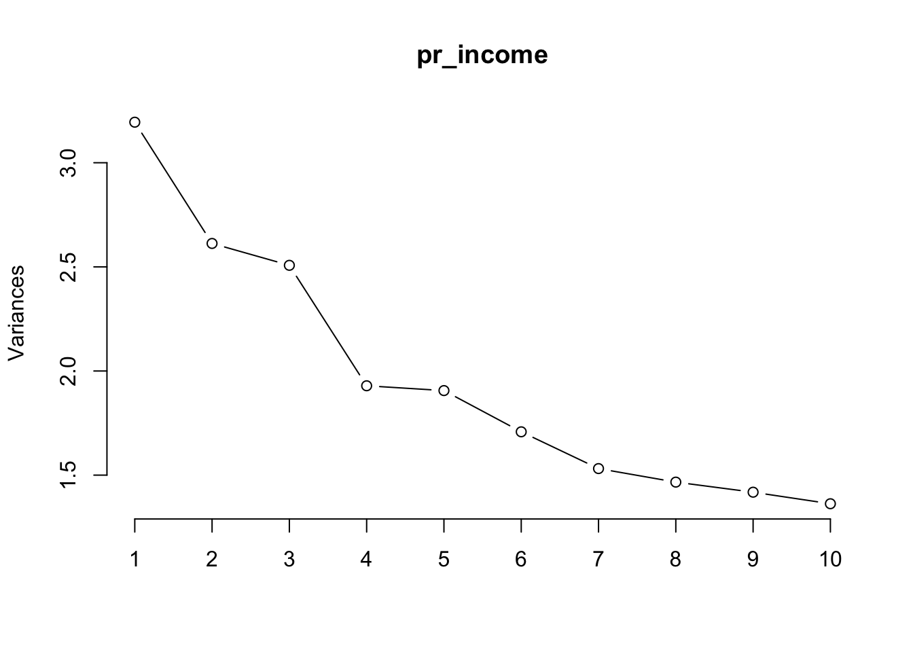
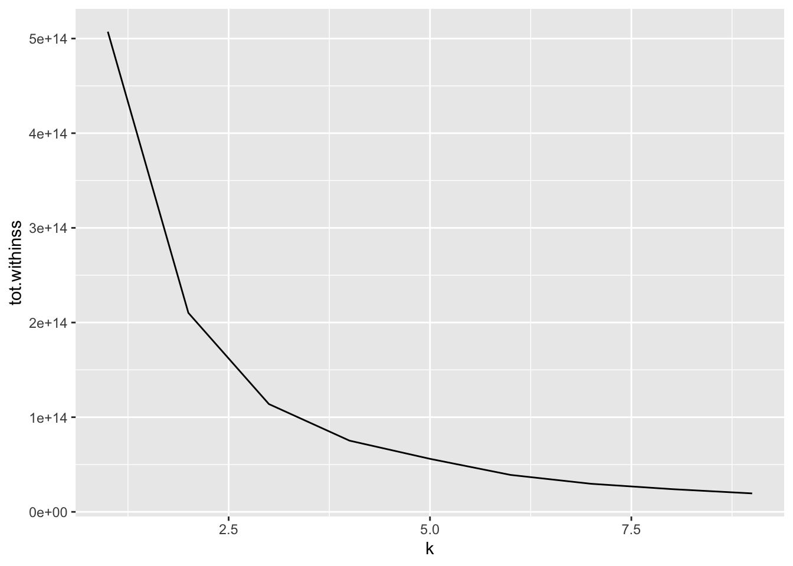

#knitr::opts_chunk$set(echo = TRUE, message = FALSE, warning = FALSE)
library(tidyverse)
library(tidytext)
library(caret)
library(tidymodels)
library(fastDummies)
library(randomForest)
Purpose
In this project, we conducted a comprehensive machine learning analysis, encompassing various stages of the data science workflow, including data preprocessing, feature engineering, and feature selection through PCA. Collaboratively, we sought to predict whether individuals had an income greater than 50K. By incorporating hyperparameter optimization and deploying a robust model pipeline, we achieved a final Kappa score of 0.9543. This project enabled us to hone our skills as aspiring Data Scientists and paves the way for future machine learning endeavors.
Highlight Of The Project
Willa was instrumental in laying the foundation for the models and identifying the PCA features. Without her exceptional work, we would not have been able to create such a comprehensive and outstanding model for predicting income above $50,000. Her valuable contributions provided a critical starting point for our team, enabling us to add the feature importance at the start and optimize the models to their best parameters. Willa’s dedication, skill, and hard work were truly impressive, and I feel grateful to have had her as a partner on this project.
Here is the direct link to her website. Take a look at her data science projects!
Predicting Income >50K
Load Libraries
Load The Data
raw_income = read_csv("openml_1590.csv", na = c("?")) %>%
mutate(income_above_50k = ifelse(class == ">50K",1,0))
income = read_csv("openml_1590.csv", na = c("?")) %>%
drop_na() %>%
mutate(income_above_50K = ifelse(class == ">50K",1,0)) %>%
select(-class) %>%
dummy_cols(remove_selected_columns = T)Run Random Forest & Obtain Importance Features
set.seed(504)
raw_index <- createDataPartition(income$income_above_50K, p = 0.8, list = FALSE)
train <- income[raw_index,]
test <- income[-raw_index, ]
ctrl <- trainControl(method = "cv", number = 3)
fit <- train(income_above_50K ~ .,
data = train,
method = "rf",
ntree = 50,
tuneLength = 3,
trControl = ctrl,
metric = "kappa")
fitRandom Forest
36178 samples
104 predictor
No pre-processing
Resampling: Cross-Validated (3 fold)
Summary of sample sizes: 24118, 24119, 24119
Resampling results across tuning parameters:
mtry RMSE Rsquared MAE
2 0.3476024 0.4097953 0.2772094
53 0.3179101 0.4613186 0.1913666
104 0.3202068 0.4549034 0.1912386
RMSE was used to select the optimal model using the smallest value.
The final value used for the model was mtry = 53.print(varImp(fit), 10)rf variable importance
only 10 most important variables shown (out of 104)
Overall
`marital-status_Married-civ-spouse` 100.000
fnlwgt 88.391
`capital-gain` 72.132
age 65.934
`education-num` 65.048
`hours-per-week` 38.148
relationship_Husband 23.865
`capital-loss` 22.797
`occupation_Exec-managerial` 8.631
`occupation_Prof-specialty` 5.868PCA
Chose Top 8 Features
inc <- income %>%
select(-c(fnlwgt,
`marital-status_Married-civ-spouse`,
age,
`capital-gain`,
`education-num`,
`hours-per-week`,
relationship_Husband,
`capital-loss`))
#Remained unchanged
pr_income = prcomp(x = inc, scale=T, center = T)
screeplot(pr_income, type="lines")
rownames_to_column(as.data.frame(pr_income$rotation)) %>%
select(1:11) %>%
filter(abs(PC1) >= 0.35 | abs(PC2) >= 0.35 | abs(PC3) >= 0.35 | abs(PC4) >= 0.35 | abs(PC5) >= 0.35 | abs(PC6) >= 0.35 | abs(PC7) >= 0.35 | abs(PC8) >= 0.35 | abs(PC9) >= 0.35 | abs(PC10) >= 0.35) rowname PC1 PC2 PC3 PC4
1 workclass_Private -0.17526595 -0.13547253 0.304797799 0.02401763
2 workclass_Self-emp-not-inc 0.14801244 0.01168218 -0.067006960 0.07757365
3 education_Some-college -0.06530044 0.06007649 0.046053650 -0.12180499
4 relationship_Not-in-family -0.11626278 0.09345537 -0.009681895 0.02508551
5 relationship_Wife -0.07643452 0.10243694 -0.155839801 0.10495583
6 race_Black -0.20749199 -0.06347990 -0.071867670 -0.26136856
7 sex_Female -0.43938132 0.23499209 -0.149918556 0.12969011
8 sex_Male 0.43938132 -0.23499209 0.149918556 -0.12969011
9 native-country_United-States 0.08714546 0.46368406 0.199639060 -0.22938060
PC5 PC6 PC7 PC8 PC9 PC10
1 -0.20886710 0.441798469 -0.22645965 -0.03914163 -0.04681505 0.00291428
2 0.14138682 -0.254839748 0.35058106 0.05445338 -0.03103841 -0.33625026
3 -0.07546707 -0.063088752 0.11632314 0.19569918 0.43973405 0.15884684
4 -0.12317719 -0.049422098 -0.03404059 -0.57428375 0.20605726 -0.14712496
5 -0.06292606 0.110184232 0.03508095 0.39257178 -0.25791740 0.12888672
6 0.37153500 -0.037152844 -0.32702635 0.10727161 0.06843460 -0.15897839
7 -0.10696874 0.005407197 0.07370032 0.08521373 -0.09415713 -0.03364547
8 0.10696874 -0.005407197 -0.07370032 -0.08521373 0.09415713 0.03364547
9 0.15037231 0.067618017 -0.02636173 -0.01036183 -0.06064057 -0.09505529Chose First 10 PCA Features
# IMPORTANT: Since I used 8 features, I updated the prc dataframe to include
# the features + PCA 1-10
prc <-
bind_cols(select(income,
c(fnlwgt,
`marital-status_Married-civ-spouse`,
age,
`capital-gain`,
age,
`hours-per-week`,
relationship_Husband,
`capital-loss`,
income_above_50K)
),
as.data.frame(pr_income$x)
) %>%
select(1:18) %>%
ungroup() %>%
rename("NonBlack_Men" = PC1,
"US_Women" = PC2,
"PrivateSec_Men" = PC3,
"NonUS_NonBlack" = PC4,
"NonPrivateSec_Black" = PC5,
"PrivateSec" = PC6,
"NonBlack_SelfEmploy" = PC7,
"Wives" = PC8,
"NonFamily_SomeCollege" = PC9,
"NotSelfEmployes_NonBlack" = PC10)
head(prc)# A tibble: 6 × 18
fnlwgt marital-status_Married-civ-spou…¹ age `capital-gain` `hours-per-week`
<dbl> <int> <dbl> <dbl> <dbl>
1 226802 0 25 0 40
2 89814 1 38 0 50
3 336951 1 28 0 40
4 160323 1 44 7688 40
5 198693 0 34 0 30
6 104626 1 63 3103 32
# ℹ abbreviated name: ¹`marital-status_Married-civ-spouse`
# ℹ 13 more variables: relationship_Husband <int>, `capital-loss` <dbl>,
# income_above_50K <dbl>, NonBlack_Men <dbl>, US_Women <dbl>,
# PrivateSec_Men <dbl>, NonUS_NonBlack <dbl>, NonPrivateSec_Black <dbl>,
# PrivateSec <dbl>, NonBlack_SelfEmploy <dbl>, Wives <dbl>,
# NonFamily_SomeCollege <dbl>, NotSelfEmployes_NonBlack <dbl>Gradient Boosting Machine
#IMPORTANT: I took a while and messed around with the hyperparameters
# Went From 0.2 Kappa to 0.6 Kappa BEFORE updating the features.
# After updating to the top 8 features + PCA 1-5, it jumped to
# 0.88 Kappa. Then I added PCA 1-10 and it jumped to 0.95 for the Kappa!
set.seed(504)
raw_index <- createDataPartition(prc$income_above_50K, p = 0.8, list = FALSE)
train <- prc[raw_index,]
test <- prc[-raw_index, ]
ctrl <- trainControl(method = "cv", number = 5)
weights <- ifelse(income$income_above_50K == 1, 75, 25)
hyperparameters <- expand.grid(interaction.depth = 9,
n.trees = 300,
shrinkage = 0.1,
n.minobsinnode = 4)
fit <- train(factor(income_above_50K) ~ .,
data = train,
method = "gbm",
verbose = FALSE,
tuneGrid = hyperparameters,
trControl = ctrl,
metric = "kappa")
fitStochastic Gradient Boosting
36178 samples
17 predictor
2 classes: '0', '1'
No pre-processing
Resampling: Cross-Validated (5 fold)
Summary of sample sizes: 28943, 28943, 28942, 28942, 28942
Resampling results:
Accuracy Kappa
0.9827796 0.9533806
Tuning parameter 'n.trees' was held constant at a value of 300
Tuning
Tuning parameter 'shrinkage' was held constant at a value of 0.1
Tuning parameter 'n.minobsinnode' was held constant at a value of 4Confusion Matrix For GBM
confusionMatrix(predict(fit, test), factor(test$income_above_50K))Confusion Matrix and Statistics
Reference
Prediction 0 1
0 6798 111
1 42 2093
Accuracy : 0.9831
95% CI : (0.9802, 0.9856)
No Information Rate : 0.7563
P-Value [Acc > NIR] : < 2.2e-16
Kappa : 0.9536
Mcnemar's Test P-Value : 3.853e-08
Sensitivity : 0.9939
Specificity : 0.9496
Pos Pred Value : 0.9839
Neg Pred Value : 0.9803
Prevalence : 0.7563
Detection Rate : 0.7517
Detection Prevalence : 0.7639
Balanced Accuracy : 0.9717
'Positive' Class : 0
Logistical Model
#I messed around with using a logistical model
#It turns out that it's pretty good too! Not as great as the GBM
#But a great and easy model to explain!
set.seed(504)
raw_index <- createDataPartition(prc$income_above_50K, p = 0.8, list = FALSE)
train <- prc[raw_index,]
test <- prc[-raw_index, ]
ctrl <- trainControl(method = "repeatedcv", number = 10, repeats = 3, verboseIter = FALSE)
hyperparameters <- expand.grid(alpha = 1,
lambda = 0.001)
fit <- train(factor(income_above_50K) ~ .,
data = train,
method = "glmnet",
family = "binomial",
tuneGrid = hyperparameters,
trControl = ctrl,
metric = "kappa",
importance = TRUE)
fitglmnet
36178 samples
17 predictor
2 classes: '0', '1'
No pre-processing
Resampling: Cross-Validated (10 fold, repeated 3 times)
Summary of sample sizes: 32560, 32561, 32561, 32561, 32559, 32559, ...
Resampling results:
Accuracy Kappa
0.9610166 0.895033
Tuning parameter 'alpha' was held constant at a value of 1
Tuning
parameter 'lambda' was held constant at a value of 0.001Confusion Matrix For Logistical Regression
confusionMatrix(predict(fit, test), factor(test$income_above_50K))Confusion Matrix and Statistics
Reference
Prediction 0 1
0 6679 197
1 161 2007
Accuracy : 0.9604
95% CI : (0.9562, 0.9643)
No Information Rate : 0.7563
P-Value [Acc > NIR] : < 2e-16
Kappa : 0.892
Mcnemar's Test P-Value : 0.06434
Sensitivity : 0.9765
Specificity : 0.9106
Pos Pred Value : 0.9713
Neg Pred Value : 0.9257
Prevalence : 0.7563
Detection Rate : 0.7385
Detection Prevalence : 0.7603
Balanced Accuracy : 0.9435
'Positive' Class : 0
KMeans Clustering
kclust <- kmeans(na.omit(prc), centers = 4)
kclust$centers fnlwgt marital-status_Married-civ-spouse age capital-gain
1 86931.3 0.4798800 39.36223 1178.652
2 307822.2 0.4480979 37.29197 993.978
3 486698.8 0.4317060 35.22655 1093.921
4 188848.4 0.4654970 38.77250 1090.494
hours-per-week relationship_Husband capital-loss income_above_50K
1 41.21239 0.4228618 85.99175 0.2453963
2 40.99760 0.4015361 87.95284 0.2414497
3 40.18760 0.3812397 69.68404 0.2144816
4 40.78357 0.4129092 92.41845 0.2551951
NonBlack_Men US_Women PrivateSec_Men NonUS_NonBlack NonPrivateSec_Black
1 0.06956303 0.10628238 -0.0890912042 -0.03258891 -0.008490584
2 -0.04531689 -0.15055893 0.0006150531 -0.02235042 0.014458490
3 -0.20329023 -0.44646489 0.1964744251 0.04160186 0.115358306
4 -0.01331648 0.02500494 0.0462143267 0.02882888 -0.010110363
PrivateSec NonBlack_SelfEmploy Wives NonFamily_SomeCollege
1 0.03384552 0.17173996 -0.029902238 -0.02188199
2 -0.07527701 -0.12068976 -0.008023897 0.09248884
3 -0.26626813 -0.36982627 0.123605508 0.13942943
4 0.03021208 -0.04107775 0.013720687 -0.03450577
NotSelfEmployes_NonBlack
1 -0.03597294
2 0.01302787
3 -0.02812971
4 0.02304227kclusts <- tibble(k = 1:9) %>%
mutate(
kclust = map(k, ~kmeans(prc, .x)),
glanced = map(kclust, glance),
augmented = map(kclust, augment, prc)
)
clusterings <- kclusts %>%
unnest(glanced, .drop = TRUE)
ggplot(clusterings, aes(k, tot.withinss)) +
geom_line()
Augumenting The GBM Model with KMeans Clustering
prc2 <- augment(kclust, prc)
set.seed(504)
raw_index <- createDataPartition(prc2$income_above_50K, p = 0.8, list = FALSE)
train <- prc2[raw_index,]
test <- prc2[-raw_index, ]
ctrl <- trainControl(method = "cv", number = 5)
hyperparameters <- expand.grid(
n.trees = 500,
interaction.depth = 5,
shrinkage = 0.1,
n.minobsinnode = 10
)
fit <- train(factor(income_above_50K) ~ .,
data = train,
method = "gbm",
trControl = ctrl,
tuneGrid = hyperparameters,
verbose = FALSE)
fitStochastic Gradient Boosting
36178 samples
18 predictor
2 classes: '0', '1'
No pre-processing
Resampling: Cross-Validated (5 fold)
Summary of sample sizes: 28943, 28943, 28942, 28942, 28942
Resampling results:
Accuracy Kappa
0.9836365 0.9557243
Tuning parameter 'n.trees' was held constant at a value of 500
Tuning
Tuning parameter 'shrinkage' was held constant at a value of 0.1
Tuning parameter 'n.minobsinnode' was held constant at a value of 10Confusion Matrix For KMeans + GBM
#We should be getting a Kappa of 0.9543!
#Sensitivity = 0.9930, Specificity = 0.9533
#Excellent Numbers!
confusionMatrix(predict(fit, test), factor(test$income_above_50K))Confusion Matrix and Statistics
Reference
Prediction 0 1
0 6792 103
1 48 2101
Accuracy : 0.9833
95% CI : (0.9804, 0.9858)
No Information Rate : 0.7563
P-Value [Acc > NIR] : < 2.2e-16
Kappa : 0.9543
Mcnemar's Test P-Value : 1.11e-05
Sensitivity : 0.9930
Specificity : 0.9533
Pos Pred Value : 0.9851
Neg Pred Value : 0.9777
Prevalence : 0.7563
Detection Rate : 0.7510
Detection Prevalence : 0.7624
Balanced Accuracy : 0.9731
'Positive' Class : 0
Results
We used a random forest model to identify the most important variables and selected the top 8 features, then utilized principal component analysis (PCA) to further analyze the data. Our final model incorporated a gradient boosting machine (GBM) algorithm with optimized hyperparameters and achieved an accuracy rate of 0.9829731 and a Kappa score of 0.9538928. To ensure the model was not overfitting, we benchmarked it with a logistic regression model that achieved a Kappa score of 0.895033 and an accuracy rate of 0.9610166. We further improved the model’s accuracy by incorporating unsupervised machine learning with Kmeans clustering, achieving a Kappa score of 0.9543 and an accuracy rate of 0.9833. Overall, our approach of feature selection and PCA was effective and could be applied to future data analysis projects with some additional fine-tuning.